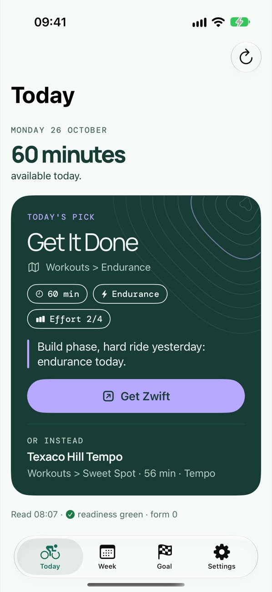
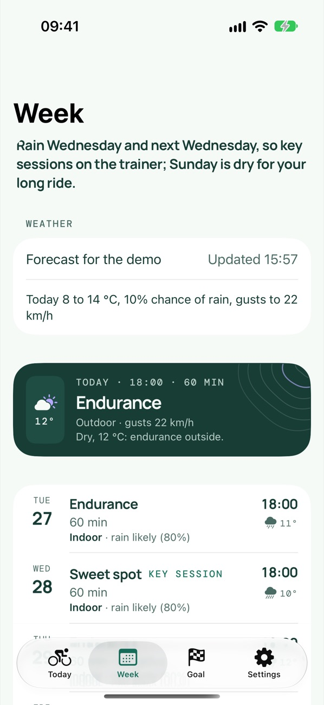
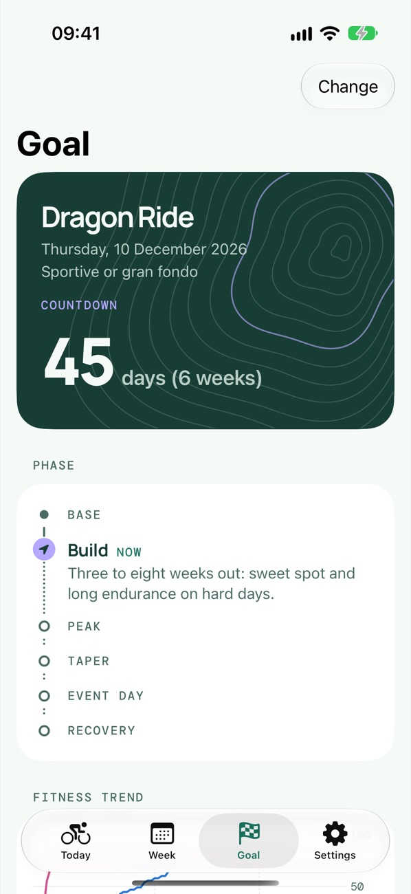

For riders training for an event
Which Zwift workout to ride today, and why.
Musette reads your rides, sleep and recovery from Apple Health, counts down to the event you're training for, and picks one workout each morning, with the reason in a sentence.
Free during the beta · iPhone and iPad · iOS or iPadOS 17 or later

Every morning
One workout. One reason.
No plan to fall behind on. Musette looks at what you've ridden, how you've slept and recovered, and how far away your event is, then picks a single session and tells you why. Some days the answer is rest.
-
Today's pick
Sweet spot
Build phase, fresh legs and 3 days since your last hard ride: sweet spot today.
-
Today's pick
Short openers
Taper week, 4 days to Hill Climb Classic, fresh legs and 3 days since your last hard ride: short openers today.
-
Today's pick
Rest day
Recovery is low (HRV is below your baseline, sleep was short), so a rest day today.
How it works
Three steps, then ride.
-
01
Connect Apple Health
Musette reads your workouts, heart rate, power, HRV, resting heart rate and sleep. Rides reach Apple Health from Zwift, an Apple Watch, Garmin, Wahoo or Strava.
-
02
Set your event
Give it a name and a date, and say what kind it is: sportive or gran fondo, road race or crit, hilly event, or time trial. No event yet? Just keep fit.
-
03
Ride today's pick
Open Zwift from Musette and find the workout where it says, such as Workouts › Endurance. The ride goes back into Apple Health and counts towards tomorrow's pick.
The week ahead
Plan the week around the weather and your diary.
The Week tab looks ten days ahead and books time to ride. Give it an approximate location and it uses Apple Weather to move key sessions indoors when it's wet and put long rides on dry days.
- Fits rides around the busy times in your calendar, then adds them to a Training calendar.
- Each morning's pick still names the workout, from how you are that day.
- An optional reminder on Sunday evening when your week is ready.

Your goal
Counting down to the start line.
Musette knows where you are in the build: base, build, peak, taper and event day. The phase shapes each pick, and the Goal tab charts your fitness since you set the goal, beside your last build at the same point.
- History shows your fitness over a month, a year or all of it, what's changing week to week, and your bests.
- After the event, Musette asks how it went and keeps the build, with what worked and what cost you.
- Your next build lines up against it, so you can see whether you're fitter than last time.

Home Screen
Today's pick, without opening the app.
The small widget shows the workout and how long it takes. The medium one adds the reason.
Privacy
Your training stays yours.
-
No account, no server
There's nothing to sign up for. Your plan syncs through your own iCloud, and there's no Musette server.
-
Reads Health, never writes
Each iPhone or iPad reads Apple Health for itself. Your Health data isn't sent to us or anyone else.
-
A rough location, for weather
For the forecast, a location rounded to about a kilometre goes to Apple Weather.
-
No ads, no tracking
No adverts, no analytics and nothing that follows you around other apps.
Sessions you add to your calendar sync with your calendar account, like your other events. To stop iCloud syncing, turn Musette off under your name › iCloud in the Settings app. Read the privacy policy
Is Musette a coach or a training plan?
No. It picks one workout a day from a library of Zwift workouts, using fixed rules applied to your training, recovery and event date. It can't see how you feel, so you decide whether to ride it.
Do I need Zwift?
For indoor workouts, yes. Musette suggests workouts from Zwift's library and opens the Zwift app, which needs its own account and subscription. On a dry day it may suggest riding outside instead.
Does it open the workout in Zwift?
It opens Zwift and tells you where to find the workout, such as Workouts › Endurance. It can't start a workout for you.
Do I need a power meter?
No. With power and your FTP, Musette works out each ride's load from power. Without them it uses heart rate, and failing that, how long you rode. Only one chart in History, power per heartbeat on steady rides, needs power and heart rate together.
Can I see how my training is going?
Yes, in History. It shows your fitness over a month, three months, a year or everything in Apple Health, how far it has come since you set your goal, what's changing week to week (hours, rides, resting heart rate, and power per heartbeat on steady rides) and your bests. The week after an event, Musette asks how it went and keeps the build: its page shows the ride on the day and what the build showed, and your next build lines up against it.
What does it read from Apple Health?
Workouts, heart rate, cycling power, cycling distance, resting heart rate, heart rate variability, sleep, and your date of birth. For History it reads back through your older workouts too, and keeps them on that device only. It never writes to Apple Health.
Does anything leave my iPhone or iPad?
Your plan syncs through your own iCloud, so your iPhone and iPad match: your goal, week, FTP and heart-rate numbers, home town, daily picks and past events. Your Health data doesn't. Each device reads Apple Health for itself, though a pick's reason can mention something like low HRV. An approximate location goes to Apple Weather for the forecast, and sessions you add to your calendar sync with your calendar account. Nothing is sent to us. To stop syncing, turn Musette off under your name › iCloud in the Settings app. The Privacy Policy has the details.
What does it cost?
Musette is free during the beta, with no ads, in-app purchases or subscription.
What do I need?
An iPhone or iPad with iOS or iPadOS 17 or later, your rides in Apple Health, and Zwift for the indoor workouts. iCloud is optional: it keeps your iPhone and iPad on the same plan.
Is it medical advice?
No. Musette's picks are training suggestions. If you feel unwell, rest and see a doctor, whatever the app suggests.
Is Musette made by Zwift?
No. Musette is made by SquaredMc, and isn't affiliated with or endorsed by Zwift, Inc.
Musette is in private beta.
We're inviting riders who are training for an event. Tell us what you're training for and what you ride with, and we'll be in touch.
Free during the beta · iPhone and iPad · iOS or iPadOS 17 or later